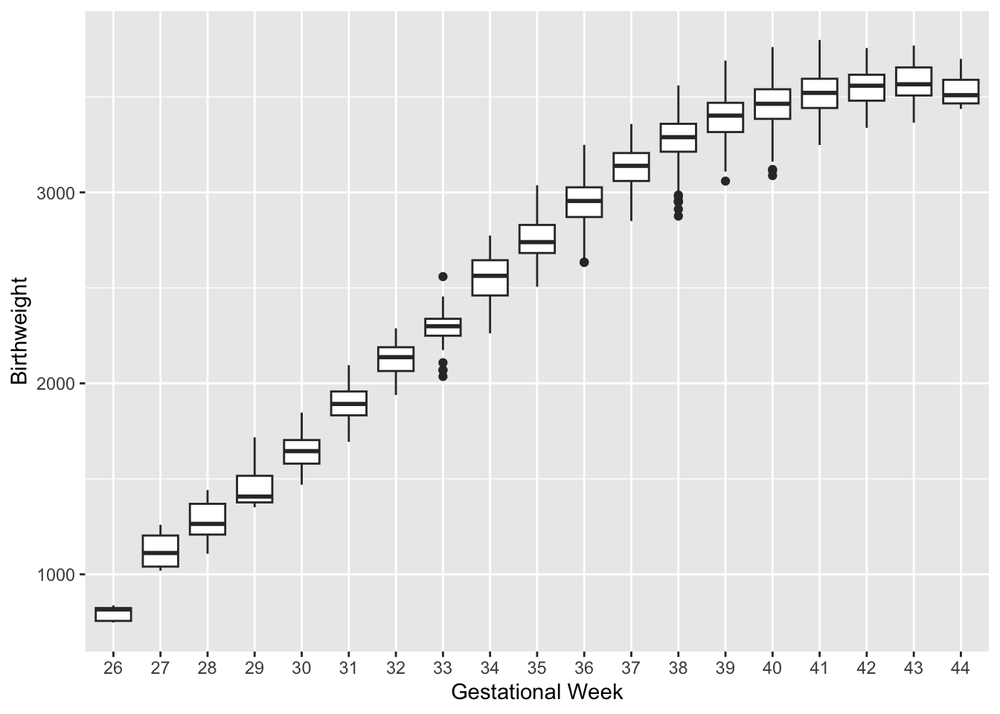
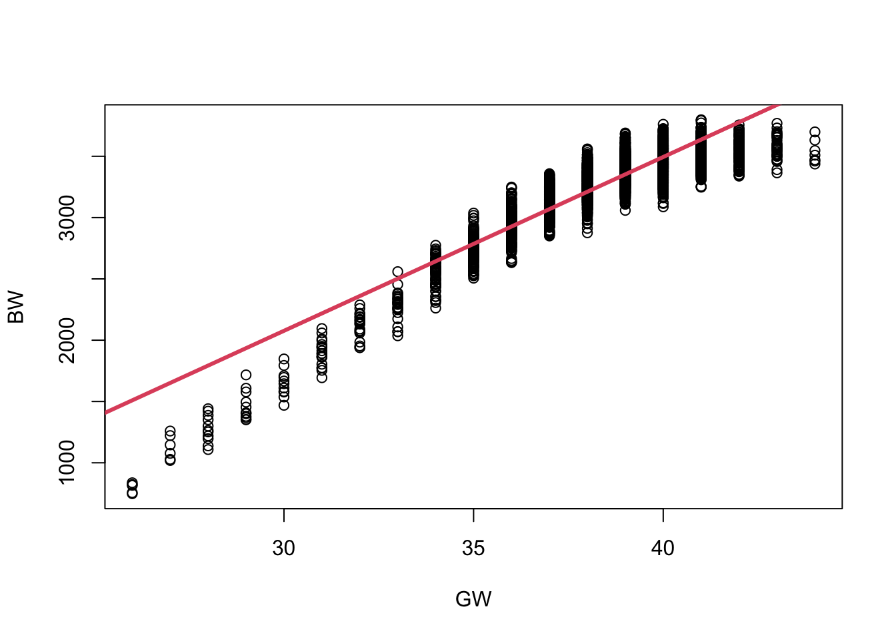
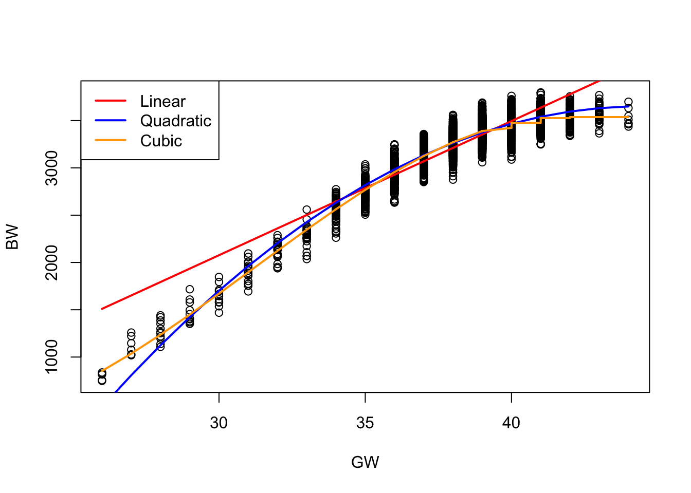
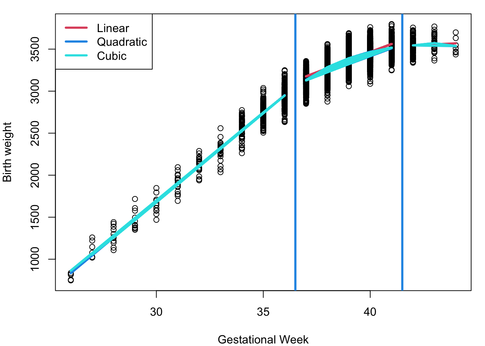

Module 4A Basis Expansion and Parametric Splines

Reading
Tutorial on Splines by Samuel Jackson (click here).
Intro to Splines (click here).
Overview
In this module, you will learn Basis expansions and parametric splines, flexible extensions of linear regression that enable modeling complex, non-linear relationships between predictors and the response variable.
After completing this module, you will understand:
Basis Functions and knots
Piecewise Linear Splines
Piecewise Cubic Splines
Bias-Variance Tradeoff
Criteria for model prediction performance (CV, GCV, AIC).
Motivation and Examples
Motivation:
Linear regression assumes a linear relationship between predictors and the response. However, real-world data often exhibit non-linear patterns that cannot be captured well by straight lines.
- Basis expansions allow us to transform predictors using functions (e.g., polynomials) to model non-linear relationships.
- Parametric splines provide even more flexibility by fitting piecewise polynomials that are smooth at points called knots.
Using these methods helps avoid mis-specifying the functional form of the model, leading to more accurate fits, better predictions, and valid inference.
Motivating Example: Birthweight and Mothers Age In a 2023 study of low birth weight among infants in Georgia, data were collected for \(N = 5{,}000\) infants. Gestational age (in weeks) and maternal age were recorded to assess the relationship between gestational age and infant birthweight (in grams). The dataset includes the following variables:
\(gw\) : gestational age in weeks.
\(age\): maternal age at delivery
\(bw\) birthweight at delivery in grams
- We see a non-linear relationship between \(gw\) and \(bw\) of a newborn.
Why Not linear regression? The wrong approach
Let’s fit a linear regression model as a baseline to assess how well it captures this relationship. We’ll then compare it to more flexible approaches, such as basis expansions or splines, to see if they provide a better fit.
Call:
lm(formula = bw ~ gw, data = dat)
Residuals:
Min 1Q Median 3Q Max
-761.50 -83.01 16.80 100.80 348.80
Coefficients:
Estimate Std. Error t value Pr(>|t|)
(Intercept) -2177.513 39.351 -55.34 <2e-16 ***
gw 141.808 1.019 139.10 <2e-16 ***
---
Signif. codes: 0 '***' 0.001 '**' 0.01 '*' 0.05 '.' 0.1 ' ' 1
Residual standard error: 144.2 on 4998 degrees of freedom
Multiple R-squared: 0.7947, Adjusted R-squared: 0.7947
F-statistic: 1.935e+04 on 1 and 4998 DF, p-value: < 2.2e-16
The linear fit does not capture the non-linear trend in the relationship between gestational age (\(gw\)) and birthweight (\(bw\)).
Overestimates birthweight at lower and higher gestational ages.
Doesn’t capture curvature in the true relationship.
Suggests the need for a more flexible modeling approach, such as basis expansions or splines, to better capture the underlying structure.
A Better Approach: Basis Expansions and Splines
Basis Expansion
- Consider the regression model:
\[ y_i = g(x_i) + \epsilon_i, \]
where \(g(x_i)\) represents the true, possibly non-linear relationship between the predictor \(x_i\) and the response \(y_i\), and \(\epsilon_i\) is the error term.
- One common approach is to express \(g(x_i)\) as a linear combination of \(M\) known basis functions \(b_m(x_i)\):
\[ g(x_i) = \sum_{m=1}^M \beta_m b_m(x_i), \]
where \(\beta_m\) are unknown coefficients to be estimated.
\(b_m(x_i)\) are called Basis Function and are chosen and fixed a priori, serving as known transformations of the original predictor \(x_i\).
Our task is to estimate the coefficients \(\beta_m\) corresponding to these transformed variables.
Basis functions provide a flexible framework to model complex, non-linear relationships by representing \(g(x)\) as a combination of simpler functions. They are fundamental tools in functional data analysis and optimization, enabling the modeling of curves as piecewise or smoothly varying functions.
Below are some common examples of Basis Functions:
Summary Table of Basis Function Types
| Basis Type | Captures | Smoothness | Use Case |
|---|---|---|---|
| Polynomial | Global smooth trends | Smooth | Curved but continuous relationships |
| Indicator | Piecewise constant | Discontinuous | Sharp jumps or categorization |
| Periodic | Cyclical/repeating trends | Smooth | Seasonal or periodic data |
Polynomial Regression
Let’s fit a Polynomial Regression to the birthweight outcomes:
\[ \begin{align*} \text{Quadratic } y_i & = \beta_0 + \beta_1 x_i + \beta_2 x_i^2 + e_i\\ \text{Cubic } y_i & = \beta_0 + \beta_1 x_i + \beta_2 x_i^2 + \beta_3 x_i^3 + e_i\\ \end{align*} \]

The linear model provides a general upward trend, but it fails to capture subtle curvature in the data, particularly at the extremes of gestational age. The quadratic model improves the fit by introducing curvature, better capturing the accelerating increase in birthweight with gestational age. However, it tends to oversimplify the relationship near the boundaries. The cubic model offers the most flexible fit among the three, capturing inflection points and more nuanced trends in the data. While it improves predictive accuracy, especially in the mid-gestational range, it also may introduce slight overfitting near the edges. Overall, higher-degree polynomials offer more flexibility but must be used cautiously to avoid instability and overfitting, particularly with extrapolation.
Note that all polynomial functions often cannot model the ends very well.
Fitting a Polynomial Regression in R
#Quadratic polynomial model
fit2 <- lm(bw ~ gw + I(gw^2), data = dat)
#Cubic polynomial model
fit3 <- lm(bw ~ gw + I(gw^2) + I(gw^3), data = dat)| Metric | Quadratic Model (fit2) |
Cubic Model (fit3) |
|---|---|---|
| Model formula | \[ bw \sim gw + gw^2 \] | \[ bw \sim gw + gw^2 + gw^3 \] |
| Residual standard error | 113.8 | 110.1 |
| Adjusted ( R^2 ) | 0.872 | 0.880 |
| F-statistic | 17,030 (p < 2.2e-16) | 12,240 (p < 2.2e-16) |
| Coefficient significance | All terms highly significant (p < 2e-16) | All terms highly significant (p < 2e-16) |
| Max residual | 451.45 | 300.81 |
| Interpretation of coefficients | Negative quadratic term indicates decreasing marginal effect of gestational weeks on birthweight | Cubic term allows more flexible curvature capturing subtle inflections |
Both quadratic and cubic models explain a large proportion of variance in birthweight, with adjusted \(R^2\) above 0.87.
The cubic model shows a modest improvement over quadratic:
- Lower residual standard error (110.1 vs 113.8)
- Slightly higher adjusted \(R^2\) (0.880 vs 0.872)
- Smaller maximum residuals (300.81 vs 451.45)
All polynomial terms are highly statistically significant, confirming nonlinear relationships between gestational age and birthweight.
The cubic term adds flexibility, capturing subtle curvature and inflection points missed by the quadratic model.
However, the improvement is modest and higher-degree polynomials risk overfitting.
Piecewise Regression
One intuitive approach to modeling non-linear relationships between a predictor and the response is to divide the range of the predictor into several meaningful subregions. For example, consider pregnancy length as a predictor:
- Preterm: less than 37 weeks
- Full-term: 37 to 41 weeks
- Post-term: more than 42 weeks
Rather than fitting a single global polynomial across the entire range, we can model the relationship using polynomial functions separately within each region. This technique allows for greater flexibility and can better capture local patterns in the data without overfitting globally.
The values that define the boundaries between these regions—such as 37 and 42 weeks in the example above—are called knots.
Knots are central to methods such as piecewise regression, where the domain of the predictor is split at these points, and separate (yet smoothly connected) polynomial functions are fit in each subregion. This structure enables models to adapt to changes in the shape of the data while preserving continuity and smoothness.
Piecewise regression can be interpreted as a model in which the basis functions of \(x_i\) are allowed to interact with indicator (dummy) variables that define distinct regions of the predictor’s domain. For example:
where
\[ D_{1i} = \begin{cases} 1 & 37 \leq x_i < 42\\ 0 & OW \end{cases} \]
\[ D_{2i} = \begin{cases} 1 & x_i \geq 42\\ 0 & OW \end{cases} \]
We have two cut-points (knots) which yields three regions. We only need two dummy variables for three regions.
The piecewise quadratic regression model is expressed as:
\[ \begin{aligned} y_i =\ & \beta_0 + \beta_1 x_i + \beta_2 x_i^2 & \text{(Preterm baseline)} \\ & + \beta_3 D_{1i} + \beta_4 x_i D_{1i} + \beta_5 x_i^2 D_{1i} & \text{(Full-term adjustment)} \\ & + \beta_6 D_{2i} + \beta_7 x_i D_{2i} + \beta_8 x_i^2 D_{2i} & \text{(Post-term adjustment)}\\ & + \epsilon \end{aligned} \]
Fitting Piecewise Polynomial Regression Models in R
In this section, we demonstrate how to fit piecewise polynomial regression models by dividing the predictor variable — gestational weeks (\(gw\)) — into meaningful regions defined above and fitting separate polynomial models within each region. We use indicator variables for the regions and interact them with polynomial terms of \(gw\).
We divide the gestational weeks into three regions based on clinical definitions:
- Preterm: \(gw < 37\) weeks
- Full-term: \(37 \leq gw \leq 41\) weeks
- Post-term: \(gw \geq 42\) weeks
In R, we create logical vectors to indicate these regions:
Ind1 = dat$gw >= 37 & dat$gw <= 41 #Full term indicator
Ind2 = dat$gw >= 42 #Post-term indicatorThe preterm region is implicitly defined where both Ind1 and Ind2 are FALSE.
To model non-linear relationships between birthweight (bw) and gestational weeks (gw) that may vary across different gestational age regions (e.g., preterm, full-term, post-term), we may extend the model to include quadratic terms for gw.
The piecewise quadratic regression model with interaction terms can be written as:
\[ bw_i = \beta_0 + \beta_1 gw_i + \beta_2 gw_i^2 + \beta_3 Ind1_i + \beta_4 Ind2_i + \beta_5 (gw_i \times Ind1_i) + \beta_6 (gw_i \times Ind2_i) + \beta_7 (gw_i^2 \times Ind1_i) + \beta_8 (gw_i^2 \times Ind2_i) + \epsilon_i \]
This model allows both the intercept and the linear and quadratic effects of gestational weeks to vary across the three gestational age regions. This flexibility enables better modeling of complex, region-specific relationships between gestational age and birthweight.
fit5 = lm (bw~(gw + I(gw^2))*(Ind1+ Ind2), data = dat)
###Important
# In R formulas, the caret symbol (^) is not interpreted as exponentiation but as a formula operator indicating interactions or polynomial expansions of terms.
#
# Writing (gw^2) without wrapping it in the I() function causes R to treat it as "gw to the power of 2" in the formula sense (interactions), not as the squared variable $gw^2$.
#
# This leads to an unintended model structure that does not include the quadratic term properly, and may result in errors or nonsensical coefficients.
dontdothis = lm(bw~(gw+(gw^2))*(Ind1+ Ind2), data = dat)
fit6 = lm (bw~(gw+I(gw^2) + I(gw^3))*(Ind1+ Ind2), data = dat)
Limitations in Piecewise Polynomials:
Limited flexibility in capturing complex trends: Although polynomial fits (linear, quadratic, cubic) are applied separately in each region, they often produce similar shapes, which may fail to represent subtle changes in the relationship between gestational age and birthweight—especially where the effect weakens at higher gestational weeks.
Lack of smoothness at knots: The fitted curves generally do not join smoothly at the boundaries (knots) between regions. This can cause abrupt changes or discontinuities in the predicted values or their slopes, which is unrealistic for most natural processes.
High model complexity: Fitting separate polynomials for each region requires estimating many parameters, increasing the degrees of freedom and the potential for overfitting, particularly with limited data.
Discontinuities at the Boundaries
Piecewise polynomial regression fits separate polynomial models within different intervals of the predictor variable separated by knots. While this allows for flexible modeling of nonlinear relationships, an important drawback is the potential for discontinuities at these knot points.
What is a discontinuity? A discontinuity occurs when the fitted function or its derivatives have abrupt changes at the knot locations. For example, suppose the predictor \(x\) is divided into two regions by a knot at \(k\). We fit two separate polynomial functions:
\[ g_1(x) = \beta_0^{(1)} + \beta_1^{(1)} x + \beta_2^{(1)} x^2, \quad x < k \]
\[ g_2(x) = \beta_0^{(2)} + \beta_1^{(2)} x + \beta_2^{(2)} x^2, \quad x \geq k \]
If these functions are not constrained to be equal at \(x = k\), then the value of \(g_1(k)\) may differ from \(g_2(k)\), causing a jump in the predicted curve.
- Discontinuity in the function: If \(g_1(k) \neq g_2(k)\), the function is discontinuous at \(k\). This means the predicted response suddenly changes as we cross the knot, which is usually unrealistic for continuous processes like birthweight increasing with gestational age.
- Discontinuity in derivatives: Even if \(g_1(k) = g_2(k)\), the slope or curvature may still jump,e.g.,
If \(g_1'(k) \neq g_2'(k)\), the first derivative (slope) is discontinuous.
If \(g_1''(k) \neq g_2''(k)\), the second derivative (curvature) is discontinuous.
Discontinuities in derivatives make the fitted curve look “kinked” or less smooth at the knots.
Why does this matter? Discontinuities reduce the smoothness of the regression curve. For biological or physical processes, smooth transitions are often expected.Piecewise polynomial regression without additional constraints does not guarantee continuity or smoothness at the knots.
Summary
| Section | Description |
|---|---|
| What is the Model? | A basis expansion model expresses an unknown function \(g(x)\) as a linear combination of known basis functions: \(g(x_i) = \sum_{m=1}^M \beta_m b_m(x_i)\) The goal is to flexibly model nonlinear relationships by choosing appropriate basis functions \(b_m(\cdot)\). |
| Polynomial Basis | Uses powers of \(x\) as basis functions: \(b_1(x) = 1, \quad b_2(x) = x, \quad b_3(x) = x^2, \quad \ldots, \quad b_M(x) = x^{M-1}\) Leads to polynomial regression models like quadratic or cubic regression. |
| Piecewise Polynomial Basis | Divides the domain of \(x\) into intervals with knots and fits separate polynomials on each interval. Uses indicator functions \(D_i\) to select intervals, e.g., \(y_i = \beta_0 + \beta_1 x_i + \beta_2 x_i^2 + \beta_3 D_{1i} + \beta_4 x_i D_{1i} + \ldots\) |
| Indicator Variables (Knots) | \(D_{1i}, D_{2i}, \ldots\) are defined to indicate which interval \(x_i\) belongs to, enabling piecewise definitions of the function. E.g., \(D_{1i} = 1\) if \(x_i\) in interval 1, else 0. Allows flexibility but can cause discontinuities at knots if not constrained. |
| Parametric Splines | Piecewise polynomials with constraints (e.g., continuity, smoothness) at knots to avoid jumps or sharp corners. Ensures the function and its derivatives match at knots, yielding smooth curves useful in regression and smoothing applications. |
| Why Use Basis Expansions? | To model nonlinear effects in regression flexibly while retaining a linear structure in parameters \(\beta_m\), enabling standard estimation methods like least squares. Basis expansions allow balancing flexibility and interpretability. |
| Key R Modeling Note | In R formulas, polynomial terms like \(x^2\) must be wrapped in I() to indicate arithmetic, e.g., I(x^2), otherwise caret ^ is interpreted as formula syntax (e.g., interaction). |
| Continuity and Smoothness | Without constraints, piecewise polynomials can be discontinuous or have sharp corners at knots. Parametric splines enforce conditions so that the function is continuous and smooth (derivatives continuous) across knots, improving fit quality and interpretability. |